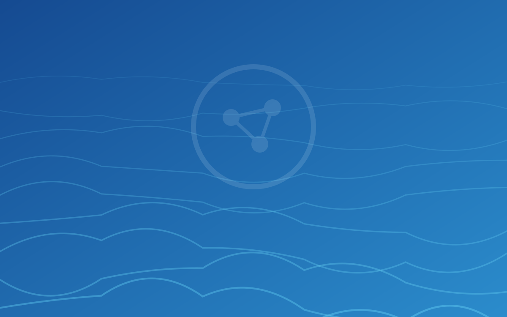

ندرة الموارد المائية
محدودية الموارد المتجددة واعتماد أكثر من 80% من الإمداد على مصادر جوفية غير متجددة.
الرئيسية/ عن الشريط
مبادرة وطنية للتعاون والتنسيق وتبادل المعرفة في ابتكار تقنيات المياه، دعمًا لرؤية السعودية 2030.
الرسالة والرؤية
انطلاقًا من رؤية المملكة العربية السعودية 2030، وفي إطار التزام وزارة البيئة والمياه والزراعة بتحقيق نقلات نوعية في تقنيات المياه والاستدامة، أُطلق شريط شراكات الابتكار المائي كمبادرة استراتيجية تهدف إلى إعادة تشكيل مستقبل قطاع المياه في المملكة — عبر إنشاء مركز عالمي للابتكار يجمع تحت مظلته مؤسسات البحث العلمي وقطاعات الأعمال والجهات الحكومية للعمل سويًا على تطوير تقنيات متقدمة في تحلية المياه وإعادة استخدامها والتقنيات القادرة على التكيّف مع التغيّرات المناخية.
يمتدّ الشريط على طول ساحل البحر الأحمر، ويسعى إلى بناء منظومة ديناميكية تجذب الاستثمارات وتسهّل البحث العلمي وتسرّع التسويق التجاري في مختلف أنحاء المملكة، مع انفتاحه على الجهات من داخل المملكة وخارجها. والمبادرة تحت رعاية وزارة البيئة والمياه والزراعة.

عضوًا في الشريط
دول ممثَّلة
مجموعات عمل
أصول وجهات على الشريط
السياق الوطني
يواجه قطاع المياه في المملكة تحديات كبيرة تخلق مجتمعةً دافعًا واضحًا لتبنّي التقنيات المتقدمة — بما يوازن بين تأمين الاحتياج المائي واستدامة الموارد.
محدودية الموارد المتجددة واعتماد أكثر من 80% من الإمداد على مصادر جوفية غير متجددة.

كلفة إنتاج المياه المحلّاة تضغط على اقتصاديات القطاع وتستدعي حلولًا أكفأ.

فجوات في كفاءة معالجة مياه الصرف الصحي تحدّ من فرص إعادة الاستخدام.

أصول قائمة تحتاج تحديثًا لرفع الكفاءة وخفض الفاقد.

غياب مجتمع متكامل يربط أصحاب المصلحة يحدّ من تطوير الحلول وتبادلها.
الأهداف
يقوم شريط شراكات الابتكار المائي على أربعة أهداف رئيسية تحدّد تدخلاته في منظومة قطاع المياه، وتجمع بين تيسير التعاون وتطوير الحلول وتمكين التمويل والتجريب وتبادل المعرفة.
تيسير التعاون بين الأعضاء من المؤسسات البحثية والقطاع الخاص والجهات الحكومية لدفع التقدّم في تقنيات المياه.
تطوير وتنفيذ حلول مستدامة لإدارة الموارد المائية مع دعم صنع السياسات والأنظمة ذات العلاقة.
تيسير الوصول إلى التمويل ومرافق الاختبار والبرامج التجريبية لتسريع تحويل الحلول المبتكرة إلى واقع تجاري.
توفير بيئة تعاونية تجمع الجامعات ومراكز الأبحاث ورواد الصناعة لتسريع تبادل المعرفة وتطوير تقنيات مائية مبتكرة.

البيان التأسيسي
وكالة البحث والابتكار — وزارة البيئة والمياه والزراعة
تعرّف على الأعضاء